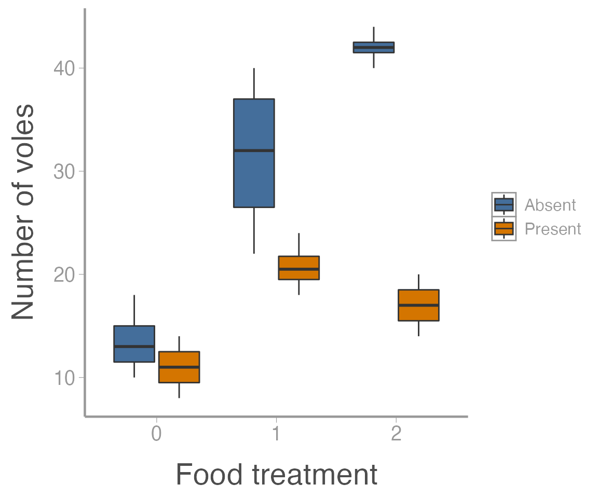
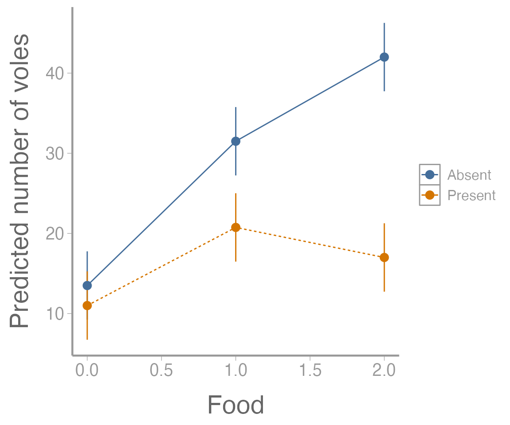

lab07_factorial.RmdWhen do we use a factorial design? Generally, when:
There are 2 factors thought to influence the response variable
The effect of each factor might depend on the other factor
We have replicates for each combination of factors
| voles | food | predators |
|---|---|---|
| 10 | 0 | Present |
| 12 | 0 | Present |
| 8 | 0 | Present |
| 14 | 0 | Present |
| 18 | 1 | Present |
| 20 | 1 | Present |
str(microtusData)
#> 'data.frame': 24 obs. of 3 variables:
#> $ voles : int 10 12 8 14 18 20 21 24 20 18 ...
#> $ food : int 0 0 0 0 1 1 1 1 2 2 ...
#> $ predators: chr "Present" "Present" "Present" "Present" ...As before, we need to convert food to a factor:
microtusData$food <- factor(microtusData$food)
str(microtusData)
#> 'data.frame': 24 obs. of 3 variables:
#> $ voles : int 10 12 8 14 18 20 21 24 20 18 ...
#> $ food : Factor w/ 3 levels "0","1","2": 1 1 1 1 2 2 2 2 3 3 ...
#> $ predators: chr "Present" "Present" "Present" "Present" ...How many replicates do we have?
Visualizing multiple factors at once can sometimes be tricky. We’ll use the fill aestethic to make separate boxplots for each predation level, within each food treatment:
ggplot(microtusData, aes(x = food, y = voles, fill = predators)) +
geom_boxplot() +
scale_x_discrete("Food treatment") +
scale_y_continuous("Number of voles")
It’s clear from this figure that 1) food supplementation influences vole abundance, and 2) the effects of food treatment depend on whether predators are present or absent.
aov()
We can analyze the microtus data using the aov() function that we’re already familiar with. Note that to include the interaction of food and predators, we use food * predators in the formula:
## food * predators --> food + predators + food:predators
aov1 <- aov(voles ~ food * predators, data = microtusData)
summary(aov1)
#> Df Sum Sq Mean Sq F value Pr(>F)
#> food 2 1337 669 40.6 2.1e-07 ***
#> predators 1 975 975 59.2 4.3e-07 ***
#> food:predators 2 518 259 15.7 0.00011 ***
#> Residuals 18 297 16
#> ---
#> Signif. codes: 0 '***' 0.001 '**' 0.01 '*' 0.05 '.' 0.1 ' ' 1On your own, fit the model with the interaction (food + predators). How do the results compare?
Often in your own analysis, you will not stop at a significant ANOVA result. For example, maybe you want to further explore the effects of one factor while holding the other factor constant. In this case, we can further test whether food supplements influence vole abundance when predators are present using the subset argument:
summary(aov(voles ~ food,
data = microtusData,
subset = predators == "Present"))
#> Df Sum Sq Mean Sq F value Pr(>F)
#> food 2 193.5 96.7 14.8 0.0014 **
#> Residuals 9 58.8 6.5
#> ---
#> Signif. codes: 0 '***' 0.001 '**' 0.01 '*' 0.05 '.' 0.1 ' ' 1Or when predators are absent:
summary(aov(voles ~ food,
data = microtusData,
subset = predators == "Absent"))
#> Df Sum Sq Mean Sq F value Pr(>F)
#> food 2 1662 831 31.4 8.7e-05 ***
#> Residuals 9 238 26
#> ---
#> Signif. codes: 0 '***' 0.001 '**' 0.01 '*' 0.05 '.' 0.1 ' ' 1Or maybe we want to test which levels are different using our old friend the Tukey HSD test, which for the factorial design will return both the “main” effect differences and the interaction:
TukeyHSD(aov1)
#> Tukey multiple comparisons of means
#> 95% family-wise confidence level
#>
#> Fit: aov(formula = voles ~ food * predators, data = microtusData)
#>
#> $food
#> diff lwr upr p adj
#> 1-0 13.875 8.694 19.056 0.0000
#> 2-0 17.250 12.069 22.431 0.0000
#> 2-1 3.375 -1.806 8.556 0.2464
#>
#> $predators
#> diff lwr upr p adj
#> Present-Absent -12.75 -16.23 -9.267 0
#>
#> $`food:predators`
#> diff lwr upr p adj
#> 1:Absent-0:Absent 18.00 8.8756 27.124 0.0001
#> 2:Absent-0:Absent 28.50 19.3756 37.624 0.0000
#> 0:Present-0:Absent -2.50 -11.6244 6.624 0.9488
#> 1:Present-0:Absent 7.25 -1.8744 16.374 0.1684
#> 2:Present-0:Absent 3.50 -5.6244 12.624 0.8221
#> 2:Absent-1:Absent 10.50 1.3756 19.624 0.0189
#> 0:Present-1:Absent -20.50 -29.6244 -11.376 0.0000
#> 1:Present-1:Absent -10.75 -19.8744 -1.626 0.0158
#> 2:Present-1:Absent -14.50 -23.6244 -5.376 0.0010
#> 0:Present-2:Absent -31.00 -40.1244 -21.876 0.0000
#> 1:Present-2:Absent -21.25 -30.3744 -12.126 0.0000
#> 2:Present-2:Absent -25.00 -34.1244 -15.876 0.0000
#> 1:Present-0:Present 9.75 0.6256 18.874 0.0323
#> 2:Present-0:Present 6.00 -3.1244 15.124 0.3351
#> 2:Present-1:Present -3.75 -12.8744 5.374 0.7781Another follow up that will often be important is visualizing the results of the ANOVA model. In the case of the factorial design, this will generally involve making a graph of the predicted response (and associated uncertainty!) for each combination of factors.
To create the data that will form the basis of this visualization, we’ll first use the model.tables() function to compute the relevant means (i.e., predicted values) and standard errors:
(tab <- model.tables(aov1, type="means", se = TRUE))
#> Tables of means
#> Grand mean
#>
#> 22.62
#>
#> food
#> food
#> 0 1 2
#> 12.25 26.12 29.50
#>
#> predators
#> predators
#> Absent Present
#> 29.00 16.25
#>
#> food:predators
#> predators
#> food Absent Present
#> 0 13.50 11.00
#> 1 31.50 20.75
#> 2 42.00 17.00
#>
#> Standard errors for differences of means
#> food predators food:predators
#> 2.030 1.658 2.871
#> replic. 8 12 4Next, we’ll extract the group means
(ybar_ij. <- tab$tables$"food:predators")
#> predators
#> food Absent Present
#> 0 13.50 11.00
#> 1 31.50 20.75
#> 2 42.00 17.00What about confidence intervals? Notice that model.tables() returns “Standard errors for differences of means”.
Extending the formulas given in Dowdy et al. p. 300-2, to the \(A \times B\) factorial case, the confidence interval for the difference in two \(A \times B\) means is:
\[\Large CI_{1−\alpha} : \bar{y}_{ij.} − \bar{y}_{ij.′} \pm t_{1−\alpha/2,ab(n−1)}\times \sqrt{\frac{2MSE}{n}}\]
where \(n = 4\) in the vole example.
To set up a plot of the group means, however, we need a confidence interval for each mean. We take out the ‘2’ from the SE expression (again, see Dowdy et al. p. 300):
\[\Large CI_{1−\alpha} : \bar{y}_{ij.} \pm t_{1−\alpha/2,ab(n−1)}\times \sqrt{\frac{MSE}{n}}\]
Where can we find MSE?
Answer: in the output of summary() of our aov1 object:
str(summary(aov1))
#> List of 1
#> $ :Classes 'anova' and 'data.frame': 4 obs. of 5 variables:
#> ..$ Df : num [1:4] 2 1 2 18
#> ..$ Sum Sq : num [1:4] 1337 975 518 297
#> ..$ Mean Sq: num [1:4] 668.6 975.4 259.1 16.5
#> ..$ F value: num [1:4] 40.6 59.2 15.7 NA
#> ..$ Pr(>F) : num [1:4] 2.15e-07 4.27e-07 1.12e-04 NA
#> - attr(*, "class")= chr [1:2] "summary.aov" "listof"Calculate the width of the confidence intervals:
MSE <- summary(aov1)[[1]]$`Mean Sq`[4] ## 16.5
ybar_ij.SE <- sqrt(MSE/4)
CI.half <- qt(0.975, 18) * ybar_ij.SE
(CI <- c(-CI.half, CI.half))
#> [1] -4.265 4.265Now we can create a data frame and plot the group means and confidence intervals:
predicted.voles <- data.frame(Food = rep(c(0, 1, 2), 2),
Predators = rep(c("Absent", "Present"), each = 3),
voles = c(ybar_ij.))
## Add lower and upper confidence intervals
predicted.voles <- dplyr::mutate(predicted.voles,
LCI = voles + CI[1],
UCI = voles + CI[2])
## Plot results
ggplot(predicted.voles, aes(x = Food, y = voles,
color = Predators)) +
geom_path(aes(linetype = Predators)) +
geom_errorbar(aes(ymin = LCI, ymax = UCI), width = 0) +
geom_point() +
scale_y_continuous("Predicted number of voles")
Fictitious Scenario
Acid rain has lowered the pH of many lakes in the northeastern United States, and as a result, fish populations have declined. Managers have resorted to aerial applications of lime (powdered calcium carbonate) in hopes of increasing pH.
To determine if lime applications result in increased pH, they applied equal amounts of lime to 15 lakes, and as a control, they applied the same amount of inert white powder to an additional 15 lakes.
Researchers suspected that the effect of lime might depend upon the buffering effects of the underlying bedrock.
To assess this hypothesis, the 30 lakes were chosen such that 10 had limestone bedrock, 10 had granite bedrock, and 10 had schist bedrock. Acidity was measured before and after each application, and the difference in pH is recorded in the acidityData data set:
data("acidityData")
head(acidityData)
#> pHdiff bedrock treatment
#> 1 1.968718 Limestone Lime
#> 2 -0.009063 Limestone Lime
#> 3 1.355943 Limestone Lime
#> 4 -0.079097 Limestone Lime
#> 5 -1.836610 Limestone Lime
#> 6 -1.006265 Limestone ControlQuestions/tasks
What are the null and alternative hypotheses?
Test the null hypotheses using an \(A \times B\) factorial ANOVA implemented with aov().
Does the effect of lime depend upon the bedrock type? If so, how?
Put your answers in an R Markdown report. Your report should include:
A well-formatted ANOVA table (with caption); and
A publication-quality plot of the estimated effect of lime on pH change, including 95% confidence intervals. The figure should also have a descriptive caption and any aesthetics (color, line type, etc.) should be clearly defined.
You may format the report however you like but it should be well-organized, with relevant headers, plain text, and the elements described above.
As always:
Be sure the output type is set to: output: html_document
Title the document: title: "Lab 7 assignment"
Be sure to include your first and last name in the author section
Be sure to set echo = TRUE in all R chunks so we can see both your code and the output
Please upload both the html and .Rmd files when you submit your assignment
See the R Markdown reference sheet for help with creating R chunks, equations, tables, etc.